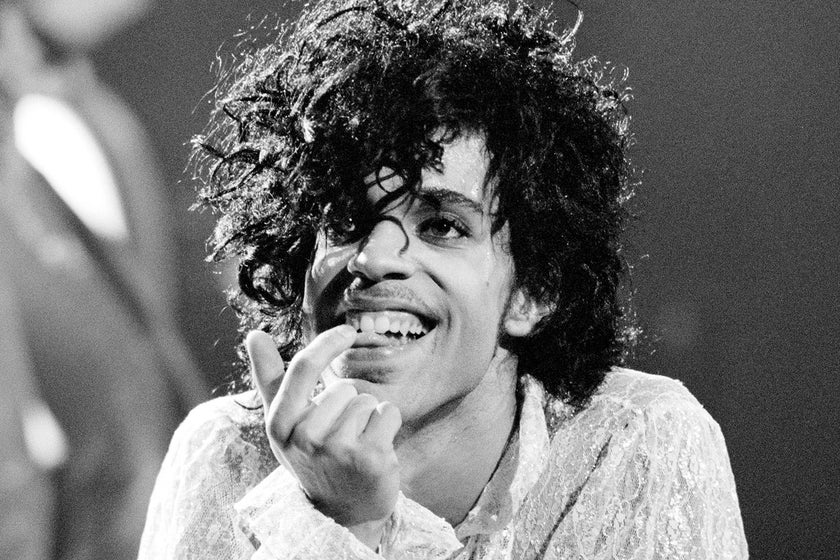

Music Tribute
Prince
Dearly beloved. We are gathered here today. To get through this thing called life.
Prince Rogers Nelson (June 7, 1958 – April 21, 2016), better known as Prince, was an American singer-songwriter, musician, record producer, dancer, and actor. He is widely regarded as one of the greatest musicians of his generation. A multi-instrumentalist who was considered a guitar virtuoso, he was well known for his eclectic work across multiple genres, flamboyant and androgynous persona, and wide vocal range which included a far-reaching falsetto and high-pitched screams.